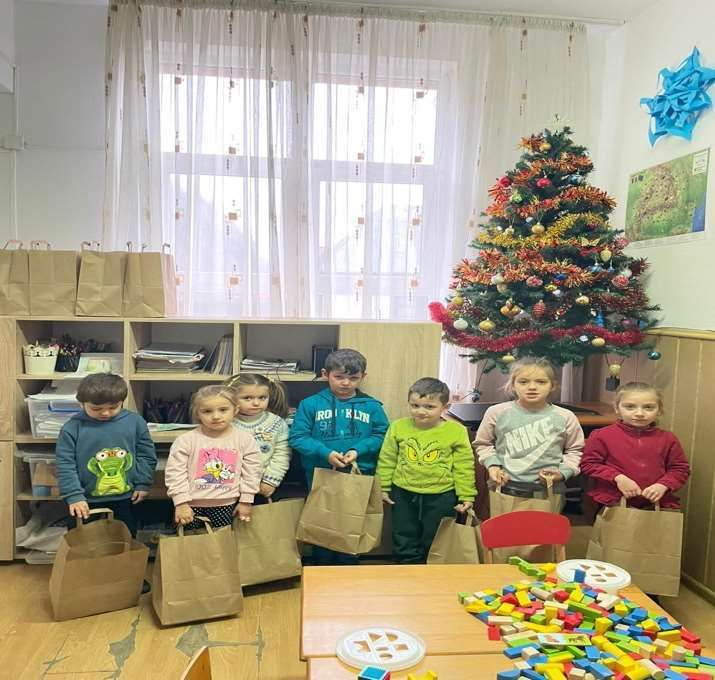
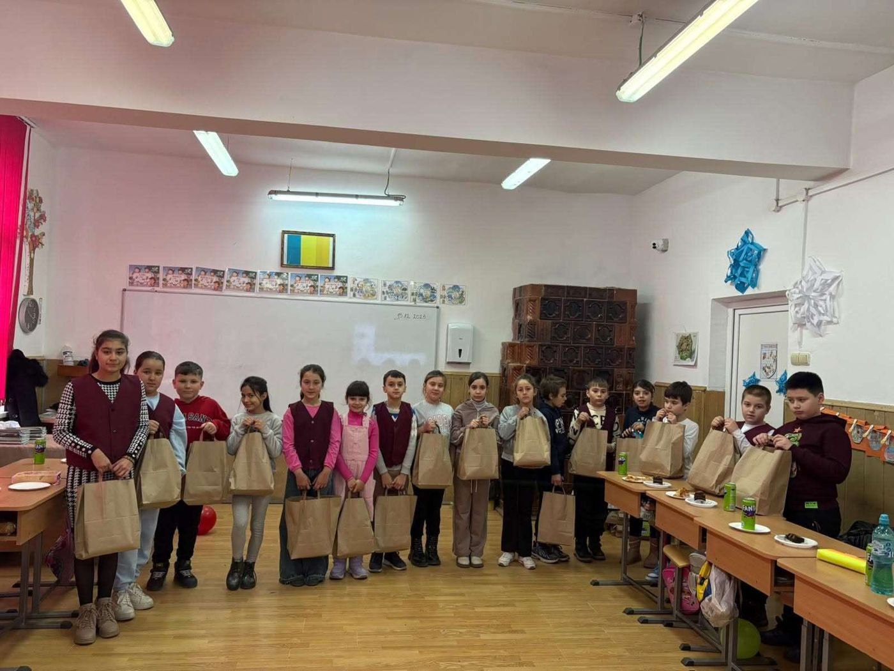
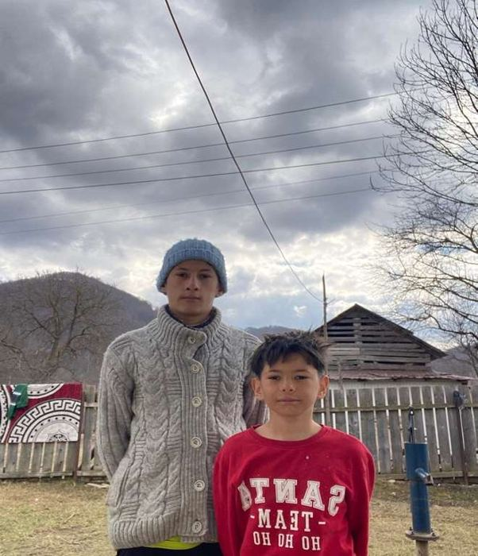

Rechizite și cărți
Ghiozdane, caiete, cărți și materiale școlare pentru copiii care nu și le permit.

Ajutăm copiii din familiile defavorizate din satele României cu rechizite, cărți, haine și oportunități reale de a învăța. Cu sprijinul tău, ajutorul ajunge direct la ei.


SECOR e.V. este o asociație non-profit înregistrată, cu sediul în Olching, lângă München. Împreună cu organizația noastră parteneră din România, sprijinim și dezvoltăm educația copiilor din zonele rurale, în special a celor din familii defavorizate.
Convingerea noastră este simplă: viitorul unui copil nu trebuie să depindă de câți bani are familia lui sau de locul în care crește. Educația deschide perspective, construiește încredere în sine și face posibilă participarea în societate.
„Împreună întărim rădăcinile și dăm aripi viitorului.”Gemeinsam stärken wir Wurzeln und verleihen Flügel für die Zukunft.
Mergem dincolo de ajutorul material: vrem ca fiecare copil să-și descopere talentele, indiferent de situația financiară a familiei.
Ghiozdane, caiete, cărți și materiale școlare pentru copiii care nu și le permit.
Haine calde de iarnă, ghete și jucării pentru copii, adolescenți și bebeluși.
Materiale didactice, cărți, echipamente digitale și dotări pentru săli de clasă.
Pregătire pentru examene, programe de lectură și ateliere creative și practice.
Lucrăm direct cu școli, profesori, contacte locale și familii pentru a afla ce lipsește cu adevărat.
Strângem donații în bani și în natură și coordonăm voluntarii care sortează și ambalează ajutoarele.
Împreună cu partenerul nostru din România, ajutoarele ajung direct la copiii și familiile cărora le sunt destinate.
Fiecare proiect pornește de la o nevoie reală și se încheie cu un zâmbet. Iată câteva dintre ele.
Haine de iarnă, încălțăminte și jucării pentru copii, adolescenți și bebeluși, alături de mobilier și alte bunuri donate, pentru copiii și familiile din Poiana.
De Crăciun, 50 de elevi și preșcolari din Poiana au primit pachete cu dulciuri, rechizite și mici bucurii. Pentru mulți dintre ei a fost singurul cadou al sărbătorilor.
Ajută-ne să repetăm proiectulO familie cu doi băieți trăia într-o casă neterminată, fără cele necesare traiului de zi cu zi. Am ajutat-o cu electrocasnice și alimente și am rămas alături de ea într-o perioadă grea.
Ajută o familie în nevoieDonația ta ajunge direct la copii. Alege o sumă și vezi ce poate face.
Sumele și exemplele sunt orientative. Folosim fiecare donație acolo unde nevoia este cea mai mare.
SECOR e.V.——Spende SECORDonează rapid și sigur cu PayPal, cardul sau Apple Pay.
Haine, încălțăminte, jucării, cărți sau rechizite în stare bună. Le colectăm în zona München / Olching.
Programează o predare →Ajută-ne la sortare, ambalare, transport sau organizarea evenimentelor. Orice oră contează.
Vreau să ajut →Căutăm companii care împărtășesc valorile noastre: sponsorizări, donații în produse sau implicarea angajaților.
Hai să discutăm →Punem mare preț pe gestionarea responsabilă a donațiilor, pe procese transparente și pe contactul direct cu comunitățile pe care le ajutăm. Toată munca noastră este făcută de voluntari.
Scopurile statutare recunoscute:
Registrul asociațiilor, Tribunalul Local München (Amtsgericht München), VR 211601, din 08.06.2026.
Finanzamt Fürstenfeldbruck a confirmat la 09.07.2026 că statutul respectă cerințele pentru scutire fiscală (§ 60a AO).
Publicăm fotografii și rapoarte după fiecare proiect, ca să vezi exact unde a ajuns ajutorul tău.
Nu putem rezolva toate problemele sociale. Dar putem oferi fiecărui copil pe care îl ajutăm un start mai bun. Fiecare carte, fiecare oră de învățare și fiecare experiență încurajatoare poate face diferența.
Ai o întrebare, vrei să donezi bunuri sau să devii partener? Scrie-ne sau sună-ne. Îți răspundem cu drag.